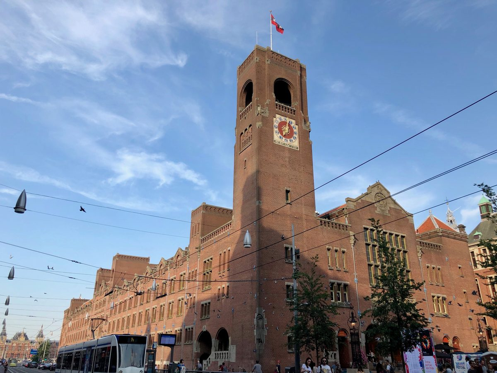
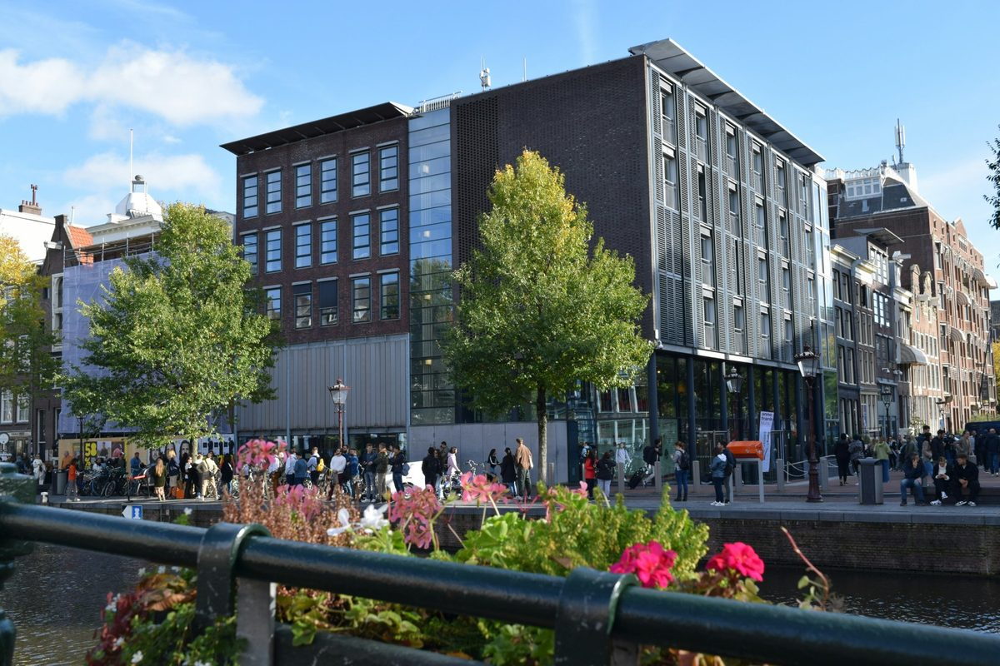
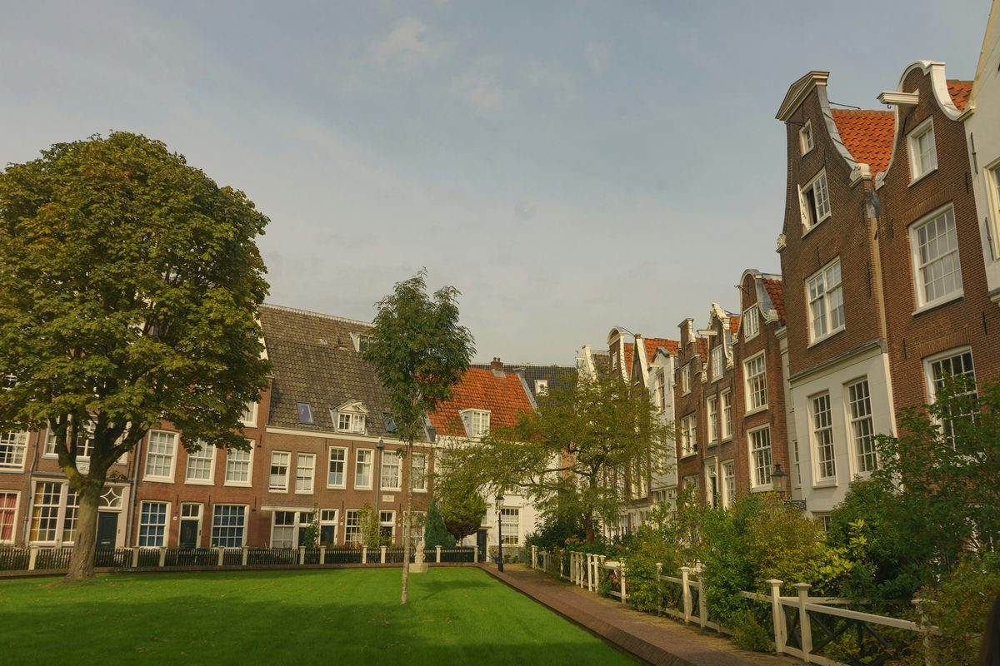

Amsterdam is one of the most immediately beautiful cities in Europe and also one of the most deceptive. The canal ring at the centre is compact enough to cross on foot in 20 minutes, but it rewards a slower pace far more than a quick circuit. Three days is enough to understand the city properly, if you use them well.
This itinerary is built around neighbourhoods and geographic logic. Each day has a clear focus so you are walking forward rather than doubling back. Day one follows the canal ring from end to end, from the water at Damrak through to the Jordaan in the west. Day two moves south to the museum quarter and De Pijp. Day three takes you out of the centre entirely, either east to Haarlem or north across the water to Amsterdam Noord.
How Amsterdam
is organised.
Amsterdam's old centre is built on a series of concentric canals that were dug outward from the original medieval core between the late 16th and early 17th centuries. The three main canals of the ring, the Herengracht, Keizersgracht and Prinsengracht, arc around the city in broad semicircles from the IJ waterfront in the north to the Amstel in the east. Almost everything a first-time visitor wants to see sits within or immediately adjacent to this ring.
The city is also extraordinarily flat, which means it belongs equally to walkers and cyclists. The distances are short. From Centraal Station to the Anne Frank House is under 20 minutes on foot. From Dam Square to the Rijksmuseum is about 15 minutes. Once you understand the layout, the whole centre becomes navigable without a map and without much effort.
The Canal Ring
and the Jordaan.
The Stepcast Amsterdam tour starts here at Damrak, the wide canal that runs south from Centraal Station toward the old city centre. Stand at the water's edge and look south: this is the view that has greeted visitors arriving by boat for four centuries, a corridor of narrow gabled canal houses narrowing toward the distance. It is one of the most recognisable urban views in Europe, and the best way to take it in is from exactly here, on foot, before the day begins.
The first stop on the tour is the Beurs van Berlage, the former stock exchange on the Damrak completed in 1903. Designed by Hendrik Petrus Berlage, it was the first major building in the Netherlands to move away from historical pastiche toward a more honest use of materials: exposed brick, iron and glass, with none of the ornamental disguise that characterised Victorian architecture elsewhere in Europe. It is considered the starting point of modern Dutch architecture. The building is now used for concerts and exhibitions and the interior is worth seeing.
A short walk east brings you to the Oude Kerk, the Old Church, the oldest building in Amsterdam. Construction began around 1306 on a low-lying patch of land in what was then the eastern edge of the medieval city. The church has been rebuilt, extended and modified so many times over the following seven centuries that it is effectively a record of the city's entire architectural history in a single structure. The neighbourhood that grew up around it over the same period became, eventually, the Red Light District.
De Wallen, the Red Light District, occupies a tangle of medieval streets and canals immediately to the east of the Oude Kerk. It is one of the oldest and most intact parts of Amsterdam, with canal houses that date back to the 15th and 16th centuries, and it is worth walking through for the architecture alone. The red-lit windows have been here in various forms since the city was a major port. The area is busy and noisy at night but much quieter in the morning, which is the better time to see it.
The tour continues west to Dam Square, the civic heart of the city since Amsterdam was founded. The Royal Palace on the western side was built as a town hall in the 1650s, at the height of the Dutch Golden Age, when Amsterdam was the wealthiest and most powerful trading city in the world. The square itself is large and open, surrounded by department stores and the occasional pigeon seller, but the scale of the palace gives it a weight that survives the tourist trade around it.
From Dam Square, a short detour south takes you to the Begijnhof, a hidden courtyard just off the Kalverstraat. The Begijnhof was founded in the 14th century as a residential community for Beguines, lay religious women who lived communally without taking formal vows. The courtyard, surrounded by 17th-century houses on three sides, feels entirely detached from the city outside. There is a wooden house at number 34 that is one of the oldest surviving timber buildings in Amsterdam. Most visitors to the Kalverstraat walk straight past the entrance without knowing it is there.
The tour then heads northwest along the Singel canal to the Torensluis, the widest bridge in Amsterdam. Built in the 17th century, it has a dungeon built into the bridge itself: a hollow chamber beneath the road surface that was used as a lock-up for minor offenders. The entrance is visible from the bridge. The canal views from here are among the best in the city.
The final stop is the Anne Frank House and the Westerkerk on the Prinsengracht in the Jordaan. The Anne Frank House is the building where Anne Frank and her family hid in a concealed annexe behind a bookcase for two years before being discovered and deported in 1944. The tour ends here, at the edge of the Jordaan, which is a good place to be in the evening.
Timed-entry tickets for the Anne Frank House release at 8am Dutch time on specific dates and sell out almost immediately. Check the official website for the release schedule and book as early as possible, ideally several months before your visit. If tickets are sold out, a waiting list sometimes opens closer to the date. The building exterior and the Westerkerk next door are freely visible from the canal regardless of whether you have a ticket.
The Westerkerk, beside the Anne Frank House, is the largest Protestant church in the Netherlands and one of the most important buildings of the Dutch Golden Age. Rembrandt is buried somewhere in the church, though the exact location of his grave is not known. The tower is the tallest in Amsterdam and offers views across the entire canal ring on clear days.
The Jordaan itself, the neighbourhood that grew up west of the Prinsengracht, was originally a working-class district housing Huguenot refugees and tradespeople during the 17th century. It became bohemian in the 20th century and expensive in the 21st. For the evening: De 9 Straatjes (the Nine Streets) is a grid of nine short connecting streets between the main canals, lined with independent shops and cafes. Canal-side bars on the Prinsengracht and the Brouwersgracht for drinks as the light fades.
The Stepcast Amsterdam tour
follows Day 1's exact route.
Damrak, Beurs van Berlage, Oude Kerk, the Red Light District, Dam Square, Begijnhof, Torensluis, Anne Frank House and the Westerkerk. Audio commentary at every stop. Go at your own pace. First 3 stops completely free.
Try the Amsterdam tour for free →
The Museum Quarter
and De Pijp.
The Rijksmuseum sits at the southern edge of the old city, facing the Museumplein. It holds the national collection of Dutch and Flemish art and history, and it contains two of the most significant paintings in the world: Rembrandt's The Night Watch (1642) and Vermeer's The Milkmaid (c. 1660). Both are in the Gallery of Honour on the first floor. The building itself, designed by Pierre Cuypers and completed in 1885, is as impressive as anything inside it. Book in advance: timed-entry tickets are required and the museum is busy year-round.
The Rijksmuseum and the Van Gogh Museum both require advance booking. The Van Gogh Museum in particular sells out fast: check the official website for ticket availability and book timed-entry slots as early as possible. Walk-in tickets are not reliably available at either.
The Van Gogh Museum is immediately next door to the Rijksmuseum on the Museumplein. It holds the largest collection of Van Gogh's work in the world: over 200 paintings and 500 drawings, including the sunflower series, the bedroom paintings, and the self-portraits. The collection is arranged chronologically and tells the complete arc of his career from the dark palette of his Dutch years to the incandescent colour of Arles and Saint-Remy. It is one of the most concentrated displays of a single artist's work anywhere in Europe. Book separately from the Rijksmuseum and arrive at your booked time.
After both museums, walk northwest through Vondelpark. Amsterdam's largest park covers 47 hectares in the middle of the city, laid out in an informal English style with winding paths, ponds and open lawns. It was given to the city in 1865 by a group of wealthy citizens and named after the Dutch playwright Joost van den Vondel. On a warm afternoon it is full of cyclists, skaters and people lying in the grass. Walk through rather than around it: the experience of the park is inseparable from the experience of the city.
For the evening, walk south from Vondelpark into De Pijp, the neighbourhood that grew up in the late 19th century as a densely built working-class district. It has gentrified gradually and is now one of the most lively and diverse parts of the city. The Albert Cuyp Market, which runs the length of the Albert Cuypstraat, is the longest street market in the Netherlands, open every day except Sunday. It sells fresh produce, street food, fabric, flowers and kitchen equipment, and it has been here since 1905. Dinner in De Pijp: the neighbourhood has a wide range of Indonesian and Surinamese restaurants that are considerably better value than anything near the Rijksmuseum.

Haarlem or
Amsterdam Noord.
The third day offers two completely different options depending on whether you want to leave the city or see a part of Amsterdam that most visitors never reach. Both are short journeys from the centre.
Option A: Haarlem
Haarlem is 20 minutes from Amsterdam Centraal by Intercity or Sprinter train, with trains running very frequently throughout the day. It was a significant city long before Amsterdam: a textile centre, a printing capital, and the place that gave Amsterdam much of its early commercial and artistic character. The Dutch Golden Age painter Frans Hals was born here and spent most of his life here. Haarlem is compact and almost entirely free of the tourist density that characterises the centre of Amsterdam.
The Grote Markt, the central market square, is one of the finest in the Netherlands: the Sint Bavokerk (St Bavo church) fills the eastern side and the medieval Stadhuis occupies the northern corner. The Sint Bavokerk took 150 years to complete and contains one of the great Baroque pipe organs in Europe, installed in 1738 and played by both Handel and a 10-year-old Mozart. The Frans Hals Museum is a short walk away, housed in the 17th-century almshouse where Hals himself lived in his final years. His late group portraits, painted in his eighties, are considered by many critics the finest portraits in the history of Dutch art. The Teylers Museum, the oldest museum in the Netherlands, opened in 1784 and still has the atmosphere of an 18th-century cabinet of curiosities: fossils, minerals, scientific instruments, and an art collection spanning five centuries.
Option B: Amsterdam Noord
Amsterdam Noord sits directly across the IJ waterfront from Centraal Station, separated from the old city by about two minutes of water. Take the free GVB ferry from behind the station: the crossing itself is part of the experience, with the city receding behind you and the Noord shoreline coming into view ahead.
The NDSM Wharf is a former shipyard a few kilometres west along the Noord waterfront, now one of the most interesting creative campuses in the Netherlands. The main shed covers 10,000 square metres and has been colonised by artists, architects and independent businesses. The scale of the industrial space is extraordinary. Street art covers almost every surface. On weekends there are markets and food stalls along the dock.
The Eye Film Institute is on the Noord waterfront immediately behind the ferry landing, a few minutes' walk from the dock. The building, opened in 2012, is an angular white structure that overhangs the water and is one of the more striking pieces of contemporary architecture in the city. The permanent collection covers the history of cinema with archival films, cameras and projection equipment. Even if you do not go inside, the building from the south bank of the IJ at dusk is worth seeing.
Tolhuistuin, a few minutes east of Eye, is a former Shell company garden that has been converted into a cultural venue and outdoor space. Less polished than the NDSM and better for it.
Practical things
worth knowing.

Getting there
Schiphol (AMS) is one of the best-connected airports in Europe and one of the easiest to leave. An Intercity or Sprinter train runs to Amsterdam Centraal every 10 to 15 minutes, taking about 15 to 17 minutes and costing around 5 to 6 euros. Buy a ticket from NS machines before boarding, or tap in and out with a contactless bank card. There is no separate airport train or expensive transfer: you simply walk to the platform and get on. It is the most straightforward major airport connection in Europe.
Getting around
The GVB network of trams, metro and buses covers the entire city. A day pass or multi-day pass is available, or you can tap in and out directly using a contactless bank card with no need to buy a separate card. The old centre is also small enough that many journeys are simply faster on foot: the canal ring is walkable end to end in about 20 minutes.
Cycling
Amsterdam is designed for bicycles, not for pedestrians. The cycling infrastructure is comprehensive and the distances between every place mentioned in this itinerary are short. Rent a bike for at least one day. You will cover more ground, see more canal houses, and understand how the city actually works from a bicycle than from any other vantage point. Rental shops are concentrated around Centraal Station and along the main tourist routes. One important rule: give way to trams. They do not slow down for cyclists who have drifted onto the tracks.
Food and drink
Indonesian rijsttafel: the Dutch colonial relationship with what is now Indonesia means Amsterdam has some of the finest Indonesian food in Europe. A rijsttafel is a rice table: a spread of small dishes, typically 15 to 20, from different parts of the Indonesian archipelago. Order one at a proper Indonesian restaurant rather than a tourist-area takeaway. The neighbourhood around the Nieuwmarkt has several long-established options.
Raw herring: maatjesharing from a street stall is the city's signature street food. Hold it by the tail, tilt your head back and lower it in. With chopped onion and pickle. It costs almost nothing and is best eaten near the water. The stalls around the Leidseplein and the Albert Cuyp Market are reliable.
Dutch cheese: buy it from a specialist cheese shop, not from the tourist stalls on the Nieuwendijk. Aged Gouda, particularly a two-year or older variety, has almost nothing in common with the orange wax-coated export version. Ask for a taste before you buy.
Jenever: Dutch gin, drunk neat in a small tulip glass. The place to drink it is a bruine kroeg: a brown cafe, characterised by dark wood panelling, low ceilings, candles in bottles and no music. They have been serving jenever and beer in this format since the 17th century. Order a kopstoot, a shot of jenever alongside a small glass of Dutch lager, and drink them together.
Brouwerij 't IJ: the city's best-known independent brewery, housed inside a working windmill on the eastern docklands. The combination of a functioning windmill and a craft brewery is as unlikely as it sounds and the beer is genuinely good. Worth the tram journey from the centre.
Your 3-day Amsterdam
itinerary at a glance.
Walk Amsterdam with
a guide in your pocket.
The Stepcast Amsterdam tour covers the canal ring from Damrak to the Jordaan with audio and written commentary at each stop. No booking, no group, no fixed start time. Go at your own pace and stop when you want. First 3 stops completely free.
Try the Amsterdam tour for free →